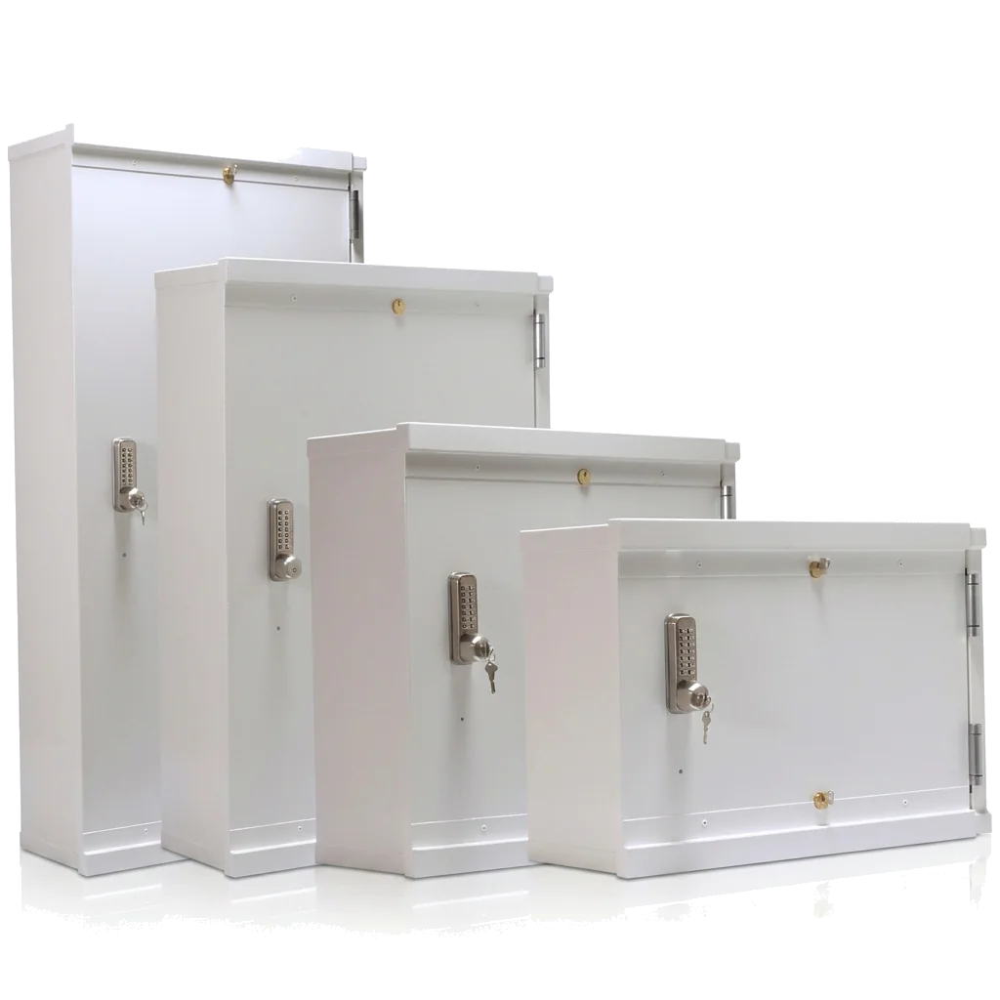
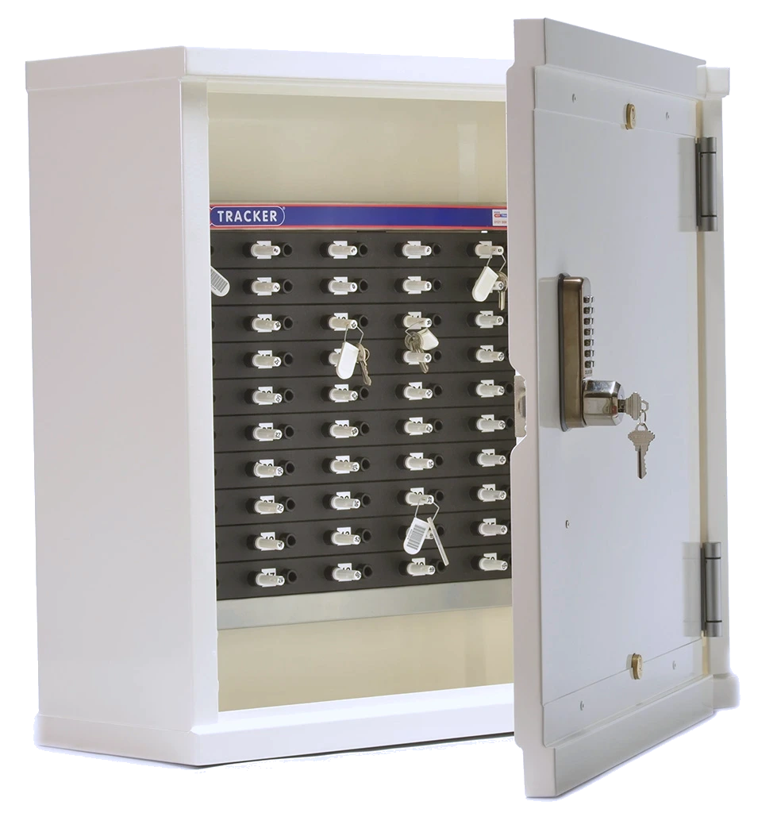

Opbergsystemen
Achter een deur die zichzelf sluit. Vanaf 25 posities is er een passende metalen kast met zelfsluitende deur, mechanisch codeslot, noodcilinder en vierpuntssluiting.

De kast neemt een of twee KeyTracker-borden of haakpanelen op: één in de kast en één aan de binnenzijde van de deur. Interne rails houden het bord vast, zodat u het er zonder gereedschap in en uit schuift.
De deur valt achter de gebruiker in het slot. Er is dus geen moment waarop de kast per ongeluk open blijft staan.

Uitvoeringen
Elke kast neemt maximaal twee mechanische sleutelsystemen of haakpanelen op. Het verschil zit in het slot en in hoe zwaar de kast is uitgevoerd.
De kasten worden op maat gemaakt. Deze keuzes maakt u bij de aanvraag.
Vier maten, passend bij de KeyTracker-borden van 25 tot 150 posities. De breedte en de diepte blijven gelijk; alleen de hoogte loopt mee met het aantal posities.
| Voor | Kast h × b × d |
|---|---|
| KeyTracker 25 | 43 × 73 × 28 cm |
| KeyTracker 50 | 69 × 73 × 28 cm |
| KeyTracker 100 | 107 × 73 × 28 cm |
| KeyTracker 150 | 145 × 73 × 28 cm |
Maatvoering onder voorbehoud. De kasten worden op maat gemaakt; wijkt uw ruimte af, dan kijken we naar een andere maat.
De borden en de bijbehorende kastmaten staan in de datasheet van de KeyTracker.
Geef door hoeveel posities u heeft, of het bord aan de wand kan en welk slot u wilt. Wij rekenen de maat en het slot voor u uit.
Vanaf 25 posities. Voor de KeyTracker 25, 50, 100 en 150 is er een passende kast; de maten staan bij Maten.
Standaard een mechanisch codeslot met drukknoppen en een noodcilinder. In plaats daarvan kan er een elektronisch codeslot of een elektrisch slot in, bediend door uw eigen kaartlezer of toegangscontrole.
Dan staat hij op een los metalen frame of een plint, midden in de ruimte. Dat is een voordelige manier om de kast vrij te plaatsen.
Ja. De kast is standaard neutraal gepoedercoat en kan in elke kleur geleverd worden. Ook de draairichting van de deur kiest u zelf: links- of rechtsdraaiend.
Ja, de high-security kast. Gehard verstevigd staal bij alle toegangspunten en boven- en onderin een gepantserd slot met verstevigde kast. Zie Uitvoeringen.
Ja. Met een spiegel in de deur ziet de gebruiker of iemand achter hem meekijkt tijdens het intoetsen van de code.
Staat uw vraag er niet bij? Stel hem ons rechtstreeks ›
De kast is de behuizing. Het systeem erin bepaalt hoe u de sleutels uitgeeft.